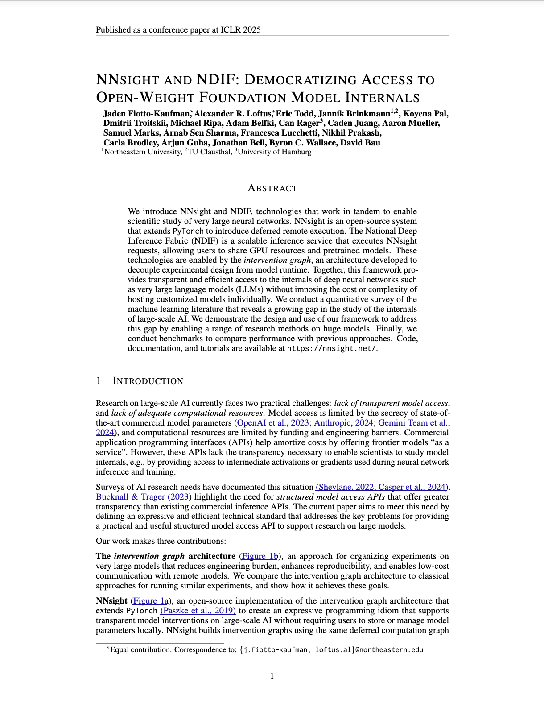
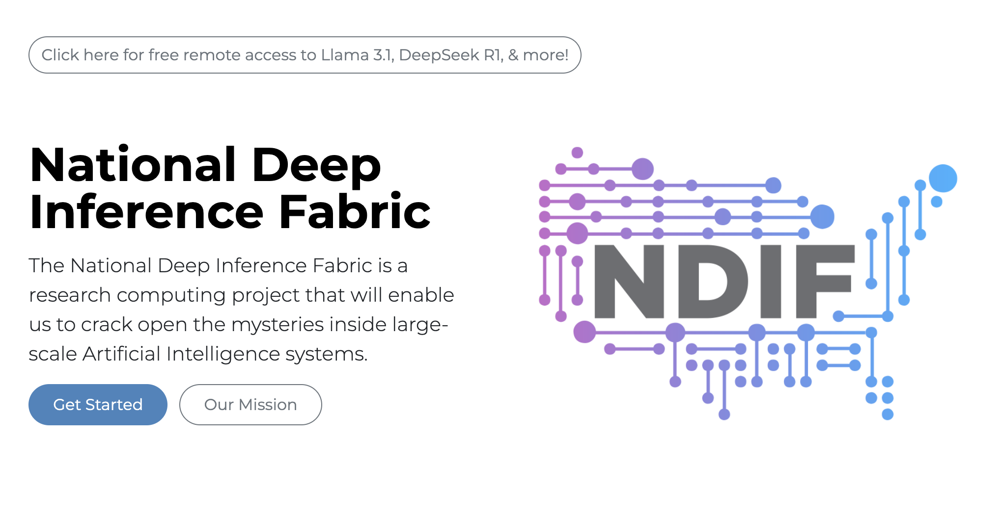
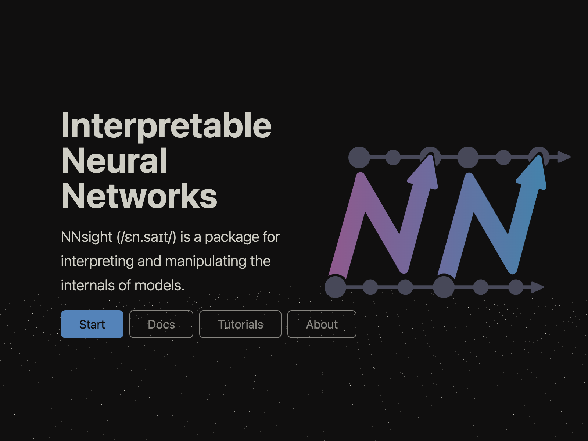

ArXiv
Preprint

NNsight
GitHub
NDIF
GitHub

NDIF
Website

NNsight
Website
How can we probe models that are too big to run?
Researchers studying large-scale AI systems face major engineering challenges: lack of transparent access to model internals, limited computational resources, and a significant engineering overhead required to run experiments.
We introduce NDIF, a shared inference infrastructure that separates experiments from engineering code, allowing researchers to design experiments using pytorch-like syntax with no engineering burden. This syntax is executed with NNsight, an open-source PyTorch extension that extends the language with model internals access and a flexible, expressive API. Experiments are represented, stored, and executed using a novel intervention graph framework that modifies the model's computation graph.
Why is research on foundation model internals important?
As AI models grow in scale and capability, understanding their inner workings becomes increasingly critical for safety, reliability, and scientific progress. However, our analysis reveals a growing gap between the most capable models and those being studied in detail. While many interpretability researchers have access to open-weight models like Llama 3.1 405B, the technical complexity and computational requirements of working with such large models create substantial barriers.
How does the intervention graph architecture work?
The intervention graph represents experiments as a portable, serializable computational graph that can be transmitted, optimized, and executed independently from the underlying model deployment. This separation of experimental design from engineering implementation allows researchers to focus on scientific questions rather than operational challenges.
Interventions are modifications to the model's computation graph that introduce additional nodes and edges. By carefully introducing these additional nodes and edges, the intervention graph defines how these modifications interact with the original model's forward and backward pass. This enables a wide range of experiments, from simple activation probing to complex causal interventions.
What is NNsight?
NNsight is an open-source library that extends PyTorch to create a familiar yet powerful API for neural network interventions. By using deferred execution within a tracing context, NNsight allows researchers to define complex experiments using standard PyTorch syntax. The experiment is represented as an intervention graph that can be executed locally or sent to a remote service.
The key features of NNsight include:
- Familiar PyTorch syntax for defining model interventions
- Support for all fundamental PyTorch operations
- Access to intermediate activations, gradients, and model parameters
- Compatibility with custom neural network architectures
- Seamless transition between local and remote execution
What is NDIF?
The National Deep Inference Fabric (NDIF) is a scalable inference service designed to execute intervention graphs on large, preloaded models. NDIF allows multiple researchers to share computational resources, dramatically reducing the cost and complexity of working with large-scale AI models.

NDIF's architecture provides several advantages over traditional approaches:
- Minimized communication overhead compared to peer-to-peer systems like Petals
- Efficient resource sharing across multiple users
- Support for safe co-tenancy of user experiments
- Horizontal scaling and dynamic resource allocation
- Support for distributed model execution across multiple GPUs
Performance and Evaluation
We evaluated the performance of NNsight and NDIF in comparison with existing tools for model interpretation and remote execution. Our results show that:
For large models, NDIF provides substantial performance improvements over traditional HPC approaches, with minimal overhead compared to local execution. When compared to Petals, another open-source remote inference framework, NDIF shows comparable performance for standard inference but significantly outperforms it for intervention tasks due to reduced communication overhead.
How to cite
The paper can be cited as follows:
bibliography
Jaden Fiotto-Kaufman*, Alexander R. Loftus*, Eric Todd, Jannik Brinkmann, Koyena Pal, Dmitrii Troitskii, Michael Ripa, Adam Belfki, Can Rager, Caden Juang, Aaron Mueller, Samuel Marks, Arnab Sen Sharma, Francesca Lucchetti, Nikhil Prakash, Carla Brodley, Arjun Guha, Jonathan Bell, Byron C. Wallace, David Bau. "NNsight and NDIF: Democratizing Access to Open-Weight Foundation Model Internals." International Conference on Learning Representations (ICLR) 2025.
bibtex
@inproceedings{fiotto-kaufman2025nnsight,
title={NNsight and NDIF: Democratizing Access to Open-Weight Foundation Model Internals},
author={Fiotto-Kaufman, Jaden and Loftus, Alexander R. and Todd, Eric and Brinkmann, Jannik and Pal, Koyena and Troitskii, Dmitrii and Ripa, Michael and Belfki, Adam and Rager, Can and Juang, Caden and Mueller, Aaron and Marks, Samuel and Sharma, Arnab Sen and Lucchetti, Francesca and Prakash, Nikhil and Brodley, Carla and Guha, Arjun and Bell, Jonathan and Wallace, Byron C. and Bau, David},
booktitle={International Conference on Learning Representations},
year={2025}
}